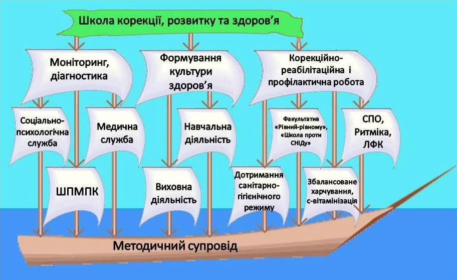
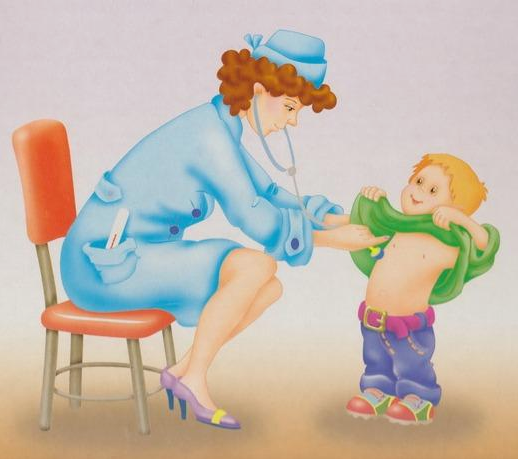
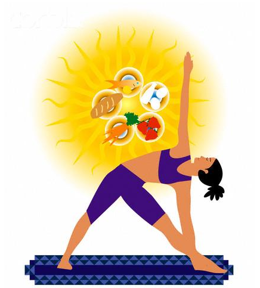

Школа здоров’я
Медичне обслуговування здобувачів освіти
Здоров’я дитини — важлива складова успішного навчання та розвитку
У КЗКОР «Трипільський навчально-реабілітаційний центр» особлива увага приділяється збереженню та зміцненню здоров’я здобувачів освіти, створенню безпечних і здоров’язбережувальних умов, своєчасному виявленню потреб у медичній допомозі та формуванню навичок здорового способу життя.
Медичне обслуговування є важливою складовою комплексної роботи НРЦ, оскільки особливості контингенту здобувачів освіти потребують уважного ставлення до їхнього фізичного стану, самопочуття та індивідуальних потреб.
Медичний пункт НРЦ
У закладі функціонує медичний пункт, у якому організовано медичне обслуговування здобувачів освіти.
Медичний пункт має ліцензію на провадження господарської діяльності з медичної практики, що забезпечує здійснення медичної діяльності відповідно до встановлених вимог.
Медичний пункт обладнаний для проведення необхідних медичних заходів, надання первинної допомоги у межах компетенції медичного працівника, спостереження за станом здоров’я дітей та організації профілактичної роботи.
Медична допомога надається кваліфікованим медичним працівником відповідно до професійних обов’язків та чинних вимог у сфері охорони здоров’я.
Як організовано медичне обслуговування
Медичне обслуговування здобувачів освіти включає:
- щоденне спостереження за самопочуттям дітей під час перебування у закладі;
- надання медичної допомоги у разі погіршення самопочуття, травмування або виникнення інших станів, що потребують реагування;
- проведення необхідних профілактичних заходів;
- організацію та супровід обов’язкових медичних профілактичних оглядів;
- контроль за виконанням рекомендацій лікарів у межах компетенції медичного працівника;
- участь в організації профілактичних щеплень відповідно до чинного законодавства;
- ведення необхідної медичної документації;
- інформування батьків або законних представників про стан здоров’я дитини у випадках, передбачених законодавством;
- взаємодію із закладами охорони здоров’я та батьками з питань медичного забезпечення дітей;
- участь у створенні безпечних та здоров’язбережувальних умов освітнього середовища.
Особлива увага — дітям з особливими освітніми потребами
У роботі медичного пункту враховуються індивідуальні особливості та потреби здобувачів освіти НРЦ.
Важливими є уважне спостереження за змінами у самопочутті дитини, своєчасне реагування на скарги та незвичні зміни у поведінці чи фізичному стані, а також дотримання рекомендацій лікарів.
Медичний працівник взаємодіє з педагогічними працівниками та адміністрацією закладу в межах компетенції, дотримуючись вимог щодо конфіденційності медичної інформації.
Профілактика — основа здоров’я
Важливим напрямом роботи є профілактика захворювань та формування у дітей навичок відповідального ставлення до власного здоров’я.
У НРЦ проводиться інформаційно-просвітницька робота щодо:
- особистої гігієни;
- здорового харчування;
- режиму дня та повноцінного відпочинку;
- рухової активності;
- профілактики сезонних захворювань;
- безпечної поведінки;
- запобігання травматизму;
- збереження психічного та емоційного благополуччя дітей.
Медична безпека
У разі виникнення ситуації, яка потребує невідкладного реагування, медичний працівник діє відповідно до своїх професійних обов’язків та встановлених алгоритмів.
За необхідності забезпечується звернення за екстреною медичною допомогою та інформування батьків або законних представників дитини.
Безпека та здоров’я кожного здобувача освіти є спільною відповідальністю всіх працівників закладу.
Здоров’язбережувальне освітнє середовище
Турбота про здоров’я дітей не обмежується роботою медичного пункту.
Здоров’язбережувальний підхід реалізується під час освітнього процесу, фізкультурно-оздоровчої, корекційно-розвиткової та виховної роботи.
У закладі створюються умови для дотримання оптимального режиму навчання і відпочинку, рухової активності, повноцінного харчування, особистої гігієни та психологічного комфорту дітей.
Медичний пункт — місце, де дитина може отримати допомогу
Для нас медичний пункт — це не лише приміщення для надання медичної допомоги.
Це місце, де дитина може бути почутою, отримати необхідну підтримку та своєчасну допомогу у випадку погіршення самопочуття.
Ми прагнемо, щоб перебування кожної дитини у Трипільському НРЦ було максимально безпечним, комфортним і сприятливим для її навчання, розвитку та повноцінного життя.
Наш принцип
Здоров’я дитини — передумова її розвитку, навчання, активності та впевненості у власних можливостях.


